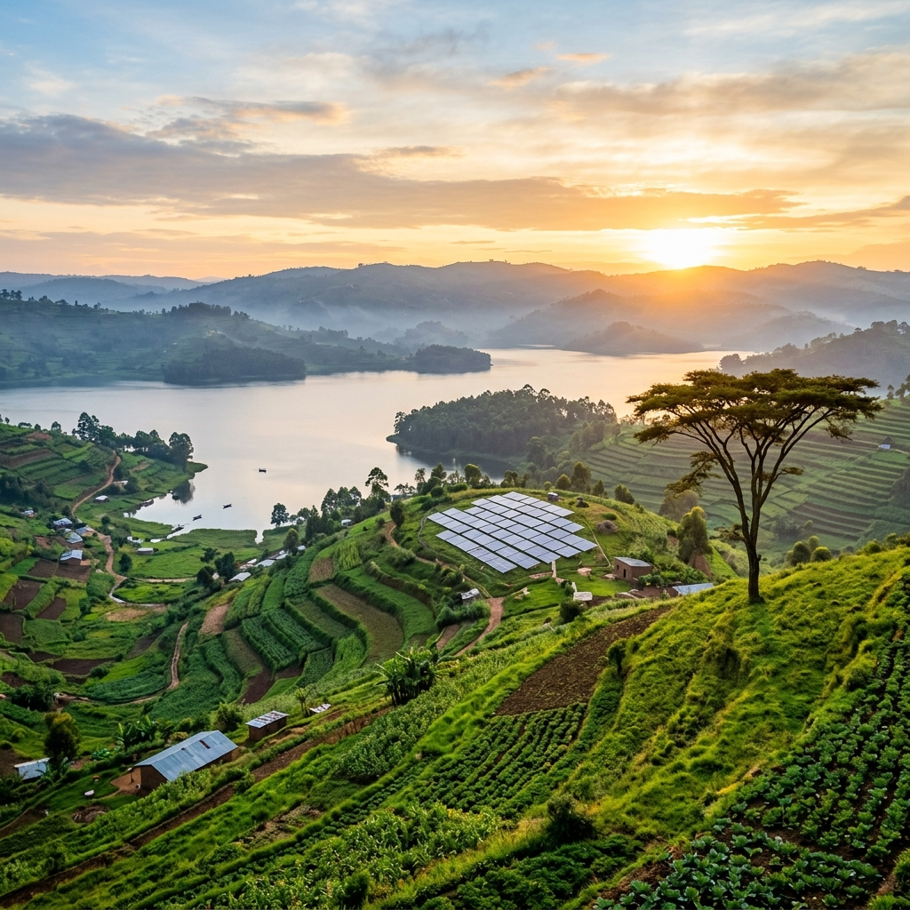
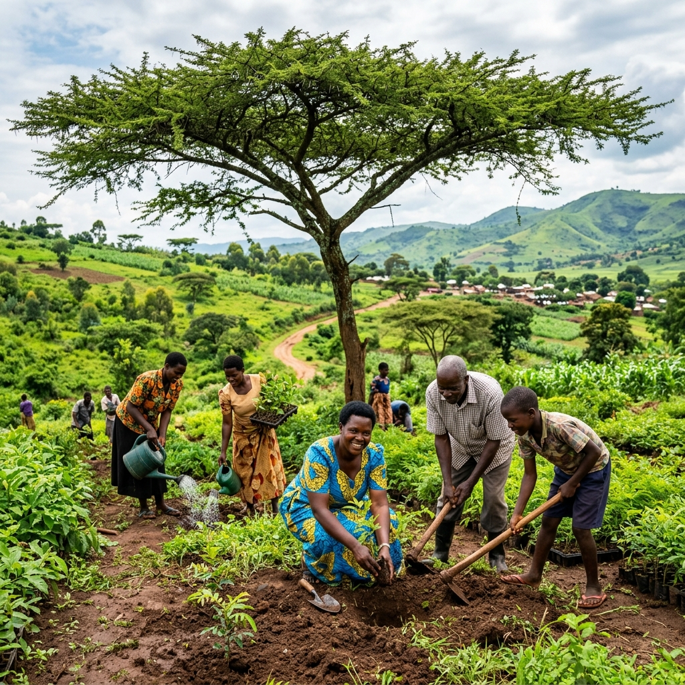

New borehole brings safe water to Mbale sub-county
A community-managed water point now serves roughly 900 people in three villages.
Read story →NOVA strengthens the institutions and social-economic systems that help families grow food, reach clean water, and build climate-resilient livelihoods, with professionalism, integrity, and transparent leadership.

“Akwata empola atuuka wala.”Luganda proverb: the one who moves steadily goes far.
A foundation built on the ethical principles of professionalism, integrity, transparency, and accountable leadership.
To support the strengthening of institutional and social-economic systems geared toward sustainable and resilient green economic growth across the country.
We partner with communities, local government, and development partners, pairing practical field programs with the policy and institutional strengthening that makes them last. Read our story →
Each program is designed with communities and measured against clear outcomes, not activities.

Drought-tolerant seed, soil health, and farmer field schools that raise yields while protecting the land.
Program details →Boreholes, rainwater harvesting, and WASH committees that keep safe water flowing long after installation.
Program details →
Solar systems for schools and health centres, plus efficient cookstoves that cut fuel costs and indoor smoke.
Program details →
Savings groups, green enterprises, and women-led cooperatives that turn climate action into stable income.
Program details →Every figure ties back to a published report. Where we fall short, we say so, transparency is a founding principle, not a slogan.
A gift of any size funds seed, water points, and solar power where it's needed most, and every shilling is accounted for.
Donate nowGovernments, funders, and businesses: let's design programs that strengthen institutions and last beyond a single grant cycle.
Start a conversationLend your skills, from agronomy to accounting to communications, to teams working directly with communities.
Join usA community-managed water point now serves roughly 900 people in three villages.
Read story →Reliable electricity now keeps vaccines cold and clinics open after dark.
Read story →
Twenty-two members are growing and selling indigenous seedlings for restoration.
Read story →Mobile Money, bank transfer, or card. Every donation is tracked, and our finances are audited each year.